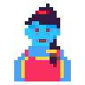

WhiskedAway stands on the shoulders of people who share their work.
Copyleft spirit: take what helps you, credit what you borrow, share what you make.
Push the hands to whatever time you're cooking for.
Turn the pointer to a room and open the door. Or set it to the star, and the door opens wherever your wander points.
Turn it to any season.
Turn it to the weather you'd like outside. The room and Gemma will follow.